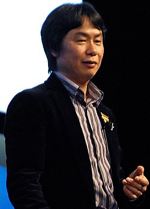

The Legend of Zelda is a video game series created by the Japanese game designers Shigeru Miyamoto and Takashi Tezuka. It is primarily developed and published by Nintendo; some installments and re-releases have been outsourced to Flagship, Vanpool, Grezzo, and Tantalus Media.
The series centers on the various incarnations of Link, a courageous young man of the elf-like Hylian race, and Princess Zelda, a princess within the bloodline of the goddess Hylia, as they fight to save the land of Hyrule from Ganon, an evil warlord turned demon king, who is the principal antagonist of the series. Ganon wishes to use the Triforce, a sacred relic left behind by the three goddesses that created Hyrule, to remake the world in his own dark image. When gathered together, the power of the Triforce can grant any wish its user desires, but if someone with a heart that does not possess a balance of the three virtues of Power, Courage, and Wisdom attempts to touch the Triforce, it will split into three triangles and bond with three people whose hearts embody the required virtue.
Although their personalities and backstory differ from game to game, the incarnations of Link and Zelda often have many traits in common, such as Link often being left-handed and clad in green, and Zelda being associated with wisdom, light, and prophecy. While the conflict with Ganon serves as a backbone for the series, some games have featured other settings and antagonists, with Link traveling or being sent to these other lands in their time of need.
Gameplay
Gameplay of The Legend of Zelda games feature a mix of puzzles, action-adventure, and exploration. These elements used to be constant throughout the series, with smaller refinements and additions in each new game. Later games in the series include stealth gameplay, where the player must avoid enemies while proceeding through a level, as well as racing elements. Depending on the game, players control Link or Princess Zelda from a fixed top-down perspective, or Link in a 3D game world with a free-roaming camera.
Although the games can be beaten with a minimal amount of exploration and side quests, the player is frequently rewarded with helpful items or increased abilities for solving puzzles or exploring hidden areas. Some items are consistent and appear many times throughout the series. Staples of the series such as bombs (which can be used both as weapons and to open blocked or hidden doorways); boomerangs, which can kill or paralyze enemies; keys for locked doors; shields; bows and arrows; candles; lanterns; magical rods; magical musical instruments; magical hammers; digging tools; and a grappling hook-like device called the hookshot can be bought, rented, or found as a puzzle-solving reward, depending on the game. These are generally used through by swapping out to one or more selected button prompts through a menu, while the sword is generally fixed. Echoes copied by Zelda in Echoes of Wisdom also attack or clear paths with bombs. Some weapons or abilities are unique to a single game. Early in certain Zelda games, swords are given to Link and/or found in a secluded area. More powerful swords, or special sword abilities, can be discovered by Link or taught to him in the series. Existing weapons can also receive upgrades.
Zelda gameplay screens
Many games in the main Zelda series have consisted of three principal areas: an overworld which connects all other areas, in which movement is multidirectional, allowing the player some degree of freedom of action; areas of interaction with other characters (merely caves or hidden rooms in the first The Legend of Zelda game, but expanding to entire towns and cities in subsequent games) in which the player gains special items or advice, can purchase equipment or complete side quests; and dungeons (or labyrinths, or palaces, or temples, or towers), areas of labyrinthine layout, often underground, (though some dungeons are partially open-air or in the skies, some are unfriendly or ruined settlements, and some are the insides of living entities), comprising a wide range of difficult enemies, bosses, and items. Each dungeon usually has one major item inside, which can be essential for solving many of the puzzles within that dungeon and often plays a crucial role in defeating that dungeon's boss, as well as progressing through the game. In 2013 A Link Between Worlds made the game progression more open-ended by having Link receive items to reach and beat the last seven dungeons by renting them. Following this, all of the main dungeons in Breath of the Wild and Tears of the Kingdom can be accessed in any order before reaching the final boss in their open world setting. Neither of them have items hidden inside dungeons to progress the game, but Tears of the Kingdom involves the help of the Water, Fire, Wind, and Lightning Sages to solve tasks specific to their respectively themed Temples. In nearly every Zelda game, navigating a dungeon is aided by locating a map, which reveals its layout, and a magic compass, which reveals the location of significant and smaller items such as keys and equipment. In games released after the NES, the dungeon includes a special "big key" or "boss key" that will unlock the door to battle the dungeon's boss enemy. In place of a big key, Breath of the Wild has Link use his Sheikah Slate to activate all the control terminals inside the dungeon before the boss attacks him, and Tears of the Kingdom has the Sages reach and interact with the locations of multiple locks in the relevant Temple to open the door to the boss. The original Zelda on the NES and Famicom Disk System had its dungeons known as "the underworld" in contrast to the overworld, but later games had broad sections located underground or behind rifts that were not dungeons in of themselves, but connected to the overworld or other dungeons, such as Subrosia in Oracle of Seasons, the Depths in Tears of the Kingdom, and the Still World in Echoes of Wisdom. Some games like Four Swords, Four Swords Adventures, and Tri Force Heroes, have no broadly-connecting overworld, and use randomly picked levels, a linear progression of numbered levels, or a hub world like Hytopia Castle Town.
Inspiration
The Legend of Zelda was principally inspired by Shigeru Miyamoto's "explorations" as a young boy in the hillsides, forests, and caves surrounding his childhood home in Sonobe, Japan where he ventured into forests with secluded lakes, caves, and rural villages. According to Miyamoto, one of his most memorable experiences was the discovery of a cave entrance in the middle of the woods. After some hesitation, he apprehensively entered the cave, and explored its depths with the aid of a lantern. Miyamoto has referred to the creation of the Zelda games as an attempt to bring to life a "miniature garden" for players to play with in each game of the series.

Shigeru Miyamoto - The Legend of Zelda creator
The story and setting were developed by Takashi Tezuka. Seeking to create a fairytale adventure game, Tezuka drew inspirations from fantasy books such as J. R. R. Tolkien's The Lord of the Rings. According to Keiji Terui, who wrote the backstory in the first game's manual, the location named Death Mountain was initially a working title for the legend of the Triforce which was written with inspirations from the battles of medieval Europe. The Master Sword was introduced as Excalibur in the French version of A Link to the Past, which is regarded as reminiscent to the legend of King Arthur. Celtic mythology inspired the name of Link's steed, Epona, based on Epona, Celtic goddess of fertility.
Audio
Games in The Legend of Zelda series frequently feature in-game musical instruments, particularly in musical puzzles, which are widespread. Often, instruments trigger game events: for example, the recorder in The Legend of Zelda can reveal secret areas, as well as warp Link to the dungeon entrances. This warping with music feature has also been used in A Link to the Past and Link's Awakening. In Ocarina of Time, playing instruments is a core part of the game, with the player needing to play the instrument through the use of the game controller to succeed. Ocarina of Time is "[one of the] first contemporary non-dance title[s] to feature music-making as part of its gameplay", using music as a heuristic device and requiring the player to utilise songs to progress in the game – a game mechanic that is also present in Majora's Mask.
The Legend of Zelda takes place predominantly in a medieval Western Europe-inspired fantasy world called Hyrule, which has developed a deep history and wide geography over the series's many releases. Hyrule's principal inhabitants are pointy-eared, elf-like humanoids called Hylians, which include the protagonists Link and Zelda.
The fictional universe established by the Zelda games sets the stage for each adventure. Some games take place in different lands with their own back-stories. Labrynna (from Oracle of Ages), Holodrum (from Oracle of Seasons), and Hytopia (from Tri Force Heroes) are different countries separate from the Kingdom of Hyrule, Termina (from Majora's Mask), the World of the Ocean King (from Phantom Hourglass), and Lorule (from A Link Between Worlds) serve as parallel worlds, and Koholint is an island far away from Hyrule that appears to be part of a dream.
Story
According to the in-game backstories, the world of Hyrule was created by the three golden goddesses: Din, Farore, and Nayru. They created the world to trap Null, which absorbed all life that appeared in an endless void created by it. Before departing, the three goddesses left a sacred artifact called the Triforce, which could grant powers to the user. It physically manifests itself as three golden triangles in which each embodies one of the goddesses' virtues: Power, Courage, and Wisdom. However, because the Triforce has no will of its own and it can not judge between good and evil, it will grant any wish indiscriminately. Because of this, it was placed within an alternate world called the "Sacred Realm" or the "Golden Land" until one worthy of its power and has balanced virtues of Power, Wisdom, and Courage in their heart could obtain it, in its entirety. If a person is not of a balanced heart, the triforce part that the user mostly believes in will stay with that person and the remainder will seek out others. In order to master and control the triforce as a whole, the user must get the other parts found in other individuals and bring them together to reunite them. The Sacred Realm can itself be affected by the heart of those who enter it: those who are pure will make it a paradise, while those who are evil will transform it into a dark realm.
Fictional chronlogy
The chronology of the Legend of Zelda series was a subject of much debate among fans until an official timeline was released within the Hyrule Historia collector's book, first released in Japan in December 2011. Prior to its release, in a 2003 interview, series creator Shigeru Miyamoto confirmed the existence of an internal document which connected all the games, with series producer Eiji Aonuma later revealing in 2010 the confidential nature of this document, which only Miyamoto himself and the director of each game had access to.